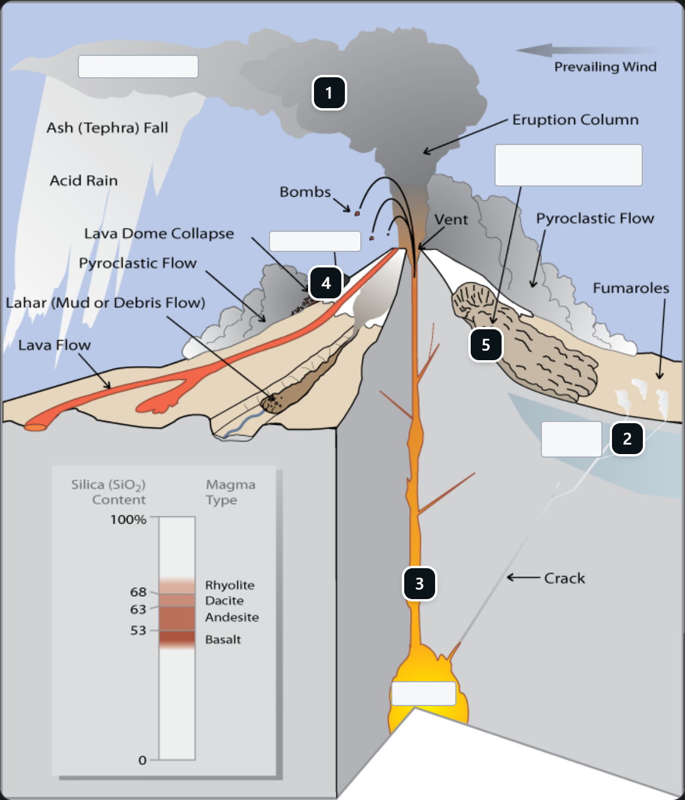

Kinetext
Make knowledge interactive
Licensed pages become short, checked, interactive lessons for teachers, built with Meta's models.
Muse Spark 1.3
Muse Spark Open
SAM 3.1
Meta Global AI Developer Hackathon 2026
Make knowledge interactive
Licensed pages become short, checked, interactive lessons for teachers, built with Meta's models.
Meta Global AI Developer Hackathon 2026
